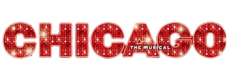

2002 | 1H 56M | 코미디, 범죄, 뮤지컬 | 미국
무대 위의 스타를 꿈꾸는 '록시'는 사고살인 혐의로 감옥에 갇힌다.
그곳에서 만난 매혹적인 시카고 최고의 디바 '벨마'는 승소율 100%의
변호사 '빌리'와 무죄 판결을 위한 계획을 세운다. '빌리'는 법정을
무대로 바꾸는 쇼 비즈니스의 거장으로, 미디어의 재산을 교묘히
이용해 도발적인 사건에 모이는 나방처럼 모인다. '록시'는 또한
'빌리'의 관심을 끌어 그녀에게 변호를 맡기고, 그저 평범한 가수
지망생이었던'록시'는 신문 1면을 장식하며 스타덤에 오르는데...
감독 | 롭 마샬
출연진ㅣ 르네 젤위거(록시 하트), 캐서린 제타-존스(벨마 켈리), 리차드 기어(빌리 플린)
: 재판을 마치 하나의 쇼, 서커스처럼 요란하게 진행하며 재판에 참여한 사람들의 혼을 쏙 빼놓는 노래
시카고의 전체 테마를 가장 잘 나타내는 OST
: 벨마와 록시가 엔딩에서 함께 춤을 추고 노래 하는 OST